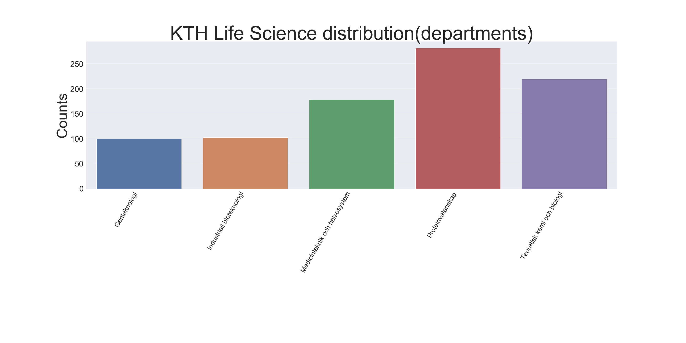

It is comprehensible that large institutions lose track of their employees' complete expertise – other than is implied in the working title. For instance, a mathematics professor – surveyed as a mathematician – could be researching optimal irradiation dosage for aneuploid cancer progression in young breast cancer patients; indeed, oncologists would be a more suitable description in some circumstances. The lack of accurate and holistic representation of researchers complicates social networking, hence, aggravating research. One resulting problem of this – the focus in this research – is to discriminate and find all researcher within life science at KTH.
Retrospectively, there has not been any self-evident approach to solve this. The most straightforward approach is to make the researchers periodically answer a survey for an update. However, given that they even reply, the effort in many of the responses will be questionable. A second contrived approach is to let a clerk read through a myriad of articles to classify the authors, which is very time-consuming, tedious, and non-automative. Neither of the mentioned approaches is tempting; nevertheless, the latter option is adopted in this study, with one small difference, replacing the clerk with a computer and software – i.e., utilizing artificial intelligence. More specifically, natural language understanding will be the foundation of this work. The contemporary techniques facilitate the collection of contextually similar articles, moreover, by ocularly inspecting a small fraction - 1% of the total articles - the rest of the articles - more than 20 thousand - is classified with more than 95% accuracy. Hence, reducing an immense workload, as well as accomplishing a quick, reproducible, and accurate method.
The first step is to use natural language processing, more specifically, the doc2vec algorithm, which is a technique for vector representation of words, articles, and the authors. Ostensibly, deployment of author-vectors for further classification is the best approach. Nonetheless, it has some severe drawback as opposed to using the articles-vector, and the reason is: author-vectors can only have one specific location, while the articles they participate in can be distinctive. To clarify: When training the vectors, different subjects(e.g., mechanics, bioinformatics, and plasma physics) will occupy different regions in space (hopefully), where domain-specific words, articles, and authors exist. However, If a researcher works in three distinct areas, say biology, plasma physics, and aerodynamics, by using author-vector, the research would be located at one of these regions while using articles-vector, allocating the name in all three regions. Hence, it is easier to distribute an author with his/her corresponding article-vectors, thus obtain a more accurate description of any given researcher.
The data adopted for the model has to be carefully selected; otherwise, overfitting is inevitable. For example, randomly picking articles would be devastating, and here is the reason why: Some subjects are more popular than others; consequently, some regions in space are denser than others. By randomly picking articles, it is more probable to pick articles in the dense regions, this, in conjunction with the desire of usage of a minimal number of points (to reduce labor), leads to undiscovered regions – i.e., a recipe for overfitting. Furthermore, it is the worst type of overfitting; even hedging with a test and validation set, they too, will suffer from the same problem as the train set. Using the accuracy of the test/validation set as a guide for performance, even if good, is merely a mirage, with a disappointing end-product when examining the final result. The solution to this conundrum is to obtain a more comprehensive dataset. Here is the selection-schema to pursue the demanded heterogeneity: Cluster the data to get a rough representation of the location of data, and then allot few data-points from each cluster to the train/test/val dataset.
Only using 1% of the data appears precarious, but, in fact, this spare set serves only as a basis for the accumulation of new data – because semi-supervised learning is adopted. Briefly, this is how Semi-supervised learning operates: Start the procedure by initiate training of a model with the small dataset – the teacher model. Moreover, the teacher model makes predictions on the rest of the data; furthermore, joining the most confident predictions to the training set. Finally, a second model – the student model – trains on the extended data set – the teacher teaches the student. Additionally, this approach can be re-iterated(either by depletion of unlabeled data or trivially terminate the algorithm. ), where the student becomes the teacher for each new iteration – i.e., make predictions of remaining unlabeled dataset (those with too low confidence in previous iterations.) for further additions of the dataset.